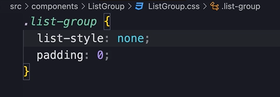
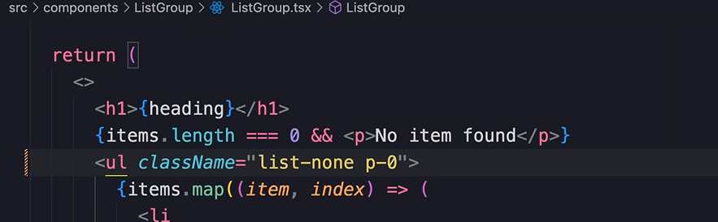

HOME
Popular UI Libraries
Some of the most popular UI libraries
Exploring all these libraries is outside the scope of this course, but
we get a little direction
Bootstrap
We have already messed with this one.
It has alot of useful components, and is very easy to use.
Material UI
Material UI is an open source, React component library that implements
googles material design.
It's the design language used in google products.
Tailwind CSS
Tailwind is a bit different.
It's what we call a utility first css library
Instead of giving us full fledged components it gives us a bunch of
small utility classes to style our components.
So instead of creating a css file and defining styles like this...

We use Tailwind CSS classes like this...

The downside of tailwind
The downside is that, as our components get more complex our markup
will be full of utility classes.
Tailwind alternatives
Daisy gives us full components with clean markup. It's kind of similar
to Bootstrap.
Chakra is similar to Material UI. It's a react component library built
with Tailwind.
Chakra is what we will use to build the project in this course.